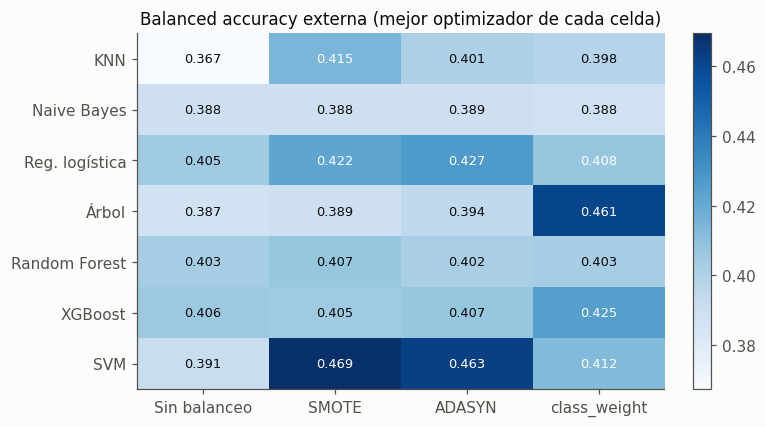
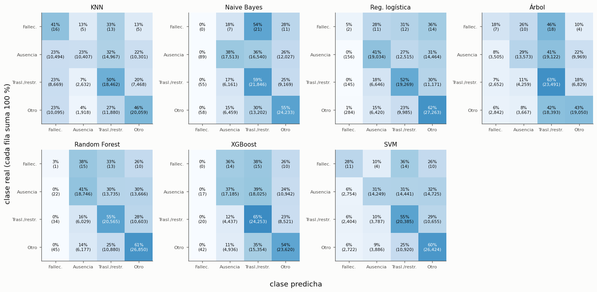
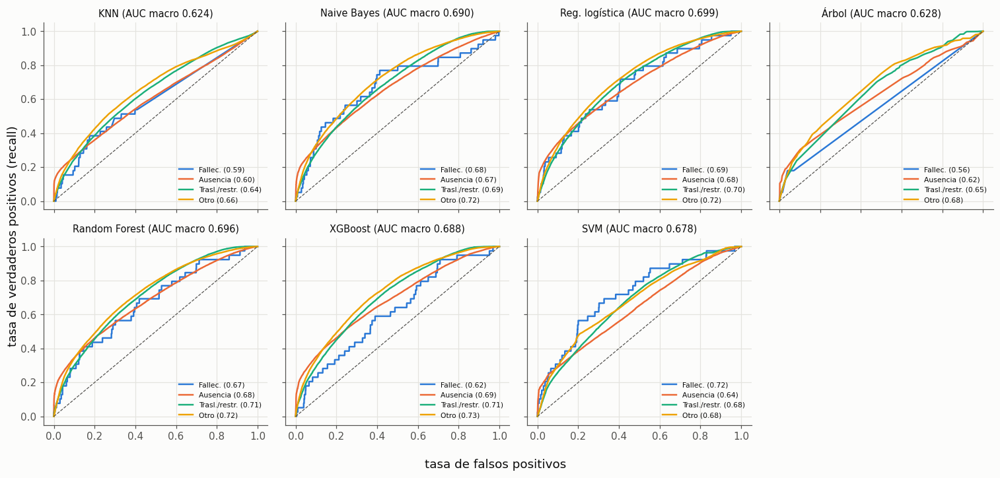
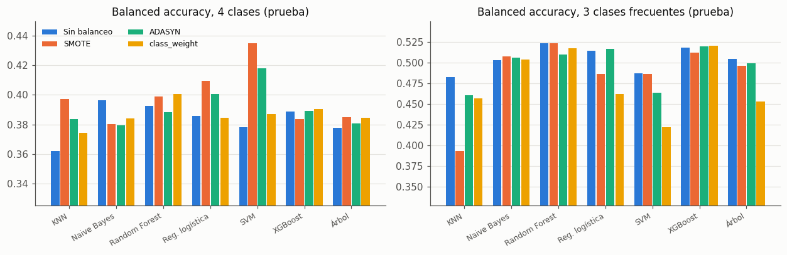
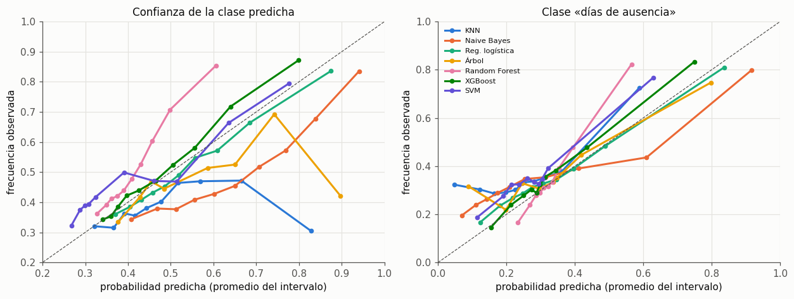

9. Evaluación de los modelos de clasificación#
Dos niveles de evaluación:
Validación anidada (bucle externo). Las 112 combinaciones, media ± desviación estándar en los 5 pliegues externos. Con ella se elige la mejor combinación de cada modelo (sin mirar la prueba).
Prueba (octubre–diciembre, establecimientos no vistos, 127.391 casos). Cada combinación se reajusta en toda la submuestra de desarrollo con sus hiperparámetros finales y se evalúa una vez.
La prueba ya se había usado en los entregables 1 y 2 para reportar la regresión logística; no es una prueba virgen (ver límites en el capítulo de conclusiones).
import sys, json, warnings
sys.path.insert(0, '../src')
warnings.filterwarnings('ignore')
import numpy as np, pandas as pd, matplotlib.pyplot as plt
from sklearn.metrics import confusion_matrix, roc_curve, roc_auc_score, classification_report
from sklearn.calibration import CalibratedClassifierCV, calibration_curve
from osha_e3 import config as C, data as D, models as M, nested as N, final as F, evaluation as E, plots as P, search as S, cache
P.setup()
mc = N.master_table('clf'); tc = F.test_table('clf')
test, yt = F.test_data('clf')
OPTS, BALS, MODELS = M.OPTIMIZERS, M.BALANCES, P.MODEL_ORDER_CLF
mc['label'] = mc.model.map(M.PRETTY) + ' · ' + mc.balance.map(M.PRETTY) + ' · ' + mc.optimizer.map(M.PRETTY)
fmt = lambda m, s: f'{m:.3f} ± {s:.3f}'
9.1 Las 112 combinaciones en la validación anidada#
Tabla maestra completa: results/master_clf.csv (una fila por combinación, con hiperparámetros
finales, métricas externas, tiempos y semilla). Aquí, las 15 mejores por balanced accuracy externa.
Nota de medición. Durante la corrida, el AUC del bucle externo se calculó después de recortar las probabilidades a 10⁻¹² y renormalizarlas, lo que rompe los empates de los modelos que dan muchas probabilidades exactamente 0 (KNN y el árbol). Eso subestima su AUC externo en torno a 0,005 a 0,015 (en la prueba: KNN 0,620 frente a 0,624; árbol 0,613 frente a 0,628). Las demás métricas no se ven afectadas. Desde la sección 9.2 todas las AUC de la prueba usan el cálculo corregido.
cols = ['recall', 'f1', 'auc', 'accuracy', 'precision', 'brier', 'ece']
top = mc.sort_values('outer_recall_mean', ascending=False).head(15)
pd.DataFrame({'Combinación': top.label,
**{c: [fmt(a, b) for a, b in zip(top[f'outer_{c}_mean'], top[f'outer_{c}_std'])] for c in cols}}
).rename(columns={'recall': 'Balanced acc. (recall macro)', 'f1': 'F1 macro', 'auc': 'AUC macro',
'accuracy': 'Accuracy', 'precision': 'Precision macro', 'brier': 'Brier', 'ece': 'ECE'}).set_index('Combinación')
| Balanced acc. (recall macro) | F1 macro | AUC macro | Accuracy | Precision macro | Brier | ECE | |
|---|---|---|---|---|---|---|---|
| Combinación | |||||||
| SVM · SMOTE · Random | 0.469 ± 0.101 | 0.368 ± 0.025 | 0.712 ± 0.051 | 0.492 ± 0.037 | 0.389 ± 0.017 | 0.632 ± 0.028 | 0.096 ± 0.040 |
| SVM · ADASYN · Random | 0.463 ± 0.108 | 0.361 ± 0.032 | 0.705 ± 0.055 | 0.485 ± 0.041 | 0.382 ± 0.024 | 0.636 ± 0.027 | 0.095 ± 0.037 |
| Árbol · class_weight · Bayesiana (TPE) | 0.461 ± 0.084 | 0.334 ± 0.015 | 0.660 ± 0.052 | 0.444 ± 0.029 | 0.373 ± 0.024 | 0.667 ± 0.033 | 0.092 ± 0.023 |
| SVM · ADASYN · Genética | 0.457 ± 0.104 | 0.356 ± 0.039 | 0.698 ± 0.069 | 0.479 ± 0.053 | 0.384 ± 0.026 | 0.636 ± 0.032 | 0.090 ± 0.035 |
| SVM · ADASYN · Grid | 0.457 ± 0.099 | 0.357 ± 0.035 | 0.695 ± 0.070 | 0.477 ± 0.052 | 0.386 ± 0.019 | 0.642 ± 0.037 | 0.094 ± 0.034 |
| SVM · ADASYN · Bayesiana (TPE) | 0.445 ± 0.108 | 0.350 ± 0.039 | 0.693 ± 0.075 | 0.467 ± 0.059 | 0.382 ± 0.024 | 0.646 ± 0.040 | 0.093 ± 0.030 |
| SVM · SMOTE · Grid | 0.441 ± 0.060 | 0.363 ± 0.031 | 0.706 ± 0.065 | 0.486 ± 0.046 | 0.390 ± 0.018 | 0.632 ± 0.034 | 0.086 ± 0.034 |
| SVM · SMOTE · Bayesiana (TPE) | 0.433 ± 0.057 | 0.359 ± 0.038 | 0.703 ± 0.068 | 0.479 ± 0.058 | 0.389 ± 0.020 | 0.636 ± 0.038 | 0.086 ± 0.038 |
| Reg. logística · ADASYN · Bayesiana (TPE) | 0.427 ± 0.067 | 0.372 ± 0.021 | 0.728 ± 0.041 | 0.501 ± 0.030 | 0.385 ± 0.015 | 0.594 ± 0.027 | 0.032 ± 0.008 |
| XGBoost · class_weight · Bayesiana (TPE) | 0.425 ± 0.069 | 0.380 ± 0.036 | 0.723 ± 0.044 | 0.491 ± 0.038 | 0.403 ± 0.034 | 0.605 ± 0.028 | 0.060 ± 0.036 |
| Árbol · class_weight · Random | 0.424 ± 0.117 | 0.307 ± 0.029 | 0.627 ± 0.064 | 0.420 ± 0.036 | 0.383 ± 0.025 | 0.681 ± 0.026 | 0.093 ± 0.029 |
| Árbol · class_weight · Grid | 0.422 ± 0.108 | 0.324 ± 0.014 | 0.639 ± 0.058 | 0.425 ± 0.031 | 0.365 ± 0.018 | 0.683 ± 0.031 | 0.100 ± 0.024 |
| Reg. logística · SMOTE · Grid | 0.422 ± 0.054 | 0.371 ± 0.024 | 0.732 ± 0.046 | 0.495 ± 0.038 | 0.383 ± 0.020 | 0.599 ± 0.038 | 0.045 ± 0.021 |
| Reg. logística · ADASYN · Genética | 0.422 ± 0.056 | 0.369 ± 0.022 | 0.732 ± 0.045 | 0.495 ± 0.035 | 0.386 ± 0.018 | 0.602 ± 0.036 | 0.042 ± 0.031 |
| Reg. logística · ADASYN · Grid | 0.421 ± 0.057 | 0.369 ± 0.023 | 0.726 ± 0.047 | 0.494 ± 0.036 | 0.382 ± 0.019 | 0.603 ± 0.039 | 0.046 ± 0.027 |
heat = mc.pivot_table(index='model', columns='balance', values='outer_recall_mean', aggfunc='max').reindex(index=MODELS, columns=BALS)
fig, ax = plt.subplots(figsize=(6.8, 4.2))
im = ax.imshow(heat.to_numpy(), cmap='Blues', aspect='auto')
for i in range(heat.shape[0]):
for j in range(heat.shape[1]):
v = heat.iat[i, j]
ax.text(j, i, f'{v:.3f}', ha='center', va='center', fontsize=8.5,
color='white' if v > np.nanpercentile(heat.to_numpy(), 70) else P.INK)
ax.set_xticks(range(len(BALS)), [M.PRETTY[b] for b in BALS]); ax.set_yticks(range(len(MODELS)), [M.PRETTY[m] for m in MODELS])
ax.grid(False); ax.set_title('Balanced accuracy externa (mejor optimizador de cada celda)')
plt.colorbar(im, ax=ax, fraction=0.04)
P.save(fig, 'e3_clf_heatmap'); plt.show()

Interpretación. Las mejores balanced accuracy anidadas (0,46 a 0,47) son de SVM con SMOTE o ADASYN y del árbol con
class_weight, pero vienen con desviaciones de ±0,08 a ±0,11 entre pliegues, el doble que el resto. La
razón está en la sección 9.6: esas combinaciones predicen Fallecimiento para miles de casos, y en un
pliegue con 1 a 4 fallecimientos acertar uno más sube la métrica hasta 0,25. Las combinaciones con mejor
AUC y F1 (logística con SMOTE o ADASYN, XGBoost con class_weight) tienen balanced accuracy algo menor
(0,42 a 0,43) pero mucho más estable (±0,05 a ±0,07). En el mapa de calor, el balanceo solo mueve la
métrica de forma apreciable en SVM (+0,07 con SMOTE), KNN (+0,05) y el árbol (+0,07 con class_weight);
en Naive Bayes, Random Forest y XGBoost la diferencia entre técnicas es de centésimas.
9.2 Mejor combinación de cada modelo en la prueba#
Para cada uno de los 7 modelos se toma la combinación (balanceo × optimizador) con mejor balanced accuracy externa media en la validación anidada; la prueba no interviene en la elección. Además se incluye la regresión logística del entregable 2 (C = 1, L2, sin búsqueda) como referencia.
best = mc.loc[mc.groupby('model').outer_recall_mean.idxmax()].set_index('model').reindex(MODELS)
best_combo = best.combo.to_dict()
tt = tc.set_index('combo')
probs = {m: F.load('clf', best_combo[m])[0] for m in MODELS}
tm = {m: E.classification_metrics(yt, probs[m]) for m in MODELS}
res = pd.DataFrame({
'Combinación elegida': [f'{M.PRETTY[best.loc[m, "balance"]]} · {M.PRETTY[best.loc[m, "optimizer"]]}' for m in MODELS],
'Balanced acc. anidada': [fmt(best.loc[m, 'outer_recall_mean'], best.loc[m, 'outer_recall_std']) for m in MODELS],
**{k: [tm[m][v] for m in MODELS] for k, v in
[('Accuracy', 'accuracy'), ('Precision', 'precision'), ('Recall (balanced acc.)', 'recall'),
('F1-score', 'f1'), ('AUC', 'auc'), ('Brier', 'brier'), ('ECE', 'ece')]}
}, index=[M.PRETTY[m] for m in MODELS])
res.round(3)
| Combinación elegida | Balanced acc. anidada | Accuracy | Precision | Recall (balanced acc.) | F1-score | AUC | Brier | ECE | |
|---|---|---|---|---|---|---|---|---|---|
| KNN | SMOTE · Genética | 0.415 ± 0.107 | 0.384 | 0.408 | 0.397 | 0.320 | 0.624 | 0.739 | 0.114 |
| Naive Bayes | ADASYN · Genética | 0.389 ± 0.060 | 0.499 | 0.384 | 0.379 | 0.373 | 0.690 | 0.627 | 0.146 |
| Reg. logística | ADASYN · Bayesiana (TPE) | 0.427 ± 0.067 | 0.515 | 0.393 | 0.400 | 0.386 | 0.699 | 0.584 | 0.025 |
| Árbol | class_weight · Bayesiana (TPE) | 0.461 ± 0.084 | 0.441 | 0.387 | 0.384 | 0.340 | 0.628 | 0.665 | 0.091 |
| Random Forest | SMOTE · Bayesiana (TPE) | 0.407 ± 0.060 | 0.519 | 0.399 | 0.399 | 0.391 | 0.696 | 0.598 | 0.099 |
| XGBoost | class_weight · Bayesiana (TPE) | 0.425 ± 0.069 | 0.511 | 0.404 | 0.390 | 0.382 | 0.688 | 0.577 | 0.024 |
| SVM | SMOTE · Random | 0.469 ± 0.101 | 0.479 | 0.402 | 0.435 | 0.366 | 0.678 | 0.630 | 0.068 |
Precision, recall y F1 son promedios macro de las 4 clases; AUC es el promedio macro de las
curvas una-contra-el-resto. Como referencia, el entregable 2 reportó para su regresión logística
(C = 1, L2, class_weight='balanced', 1.433 columnas, entrenada con todo el desarrollo) un
balanced accuracy de 0,40, F1 macro de 0,40 y AUC macro de 0,69 en esta misma prueba.
Interpretación. En la prueba todos los modelos quedan por debajo de su balanced accuracy anidada (0,38 a 0,43 frente a 0,39 a 0,47); la caída es mayor justo en las combinaciones más dependientes de Fallecimiento (SVM de 0,469 a 0,435, árbol de 0,461 a 0,384), consistente con que su ventaja anidada era en parte ruido de esa clase. El mejor balanced accuracy en la prueba es el de SVM (0,435), pero con F1 macro bajo (0,366). Random Forest, XGBoost y la logística dan el mejor equilibrio: accuracy de 0,51 a 0,52, F1 macro de 0,38 a 0,39 y AUC de 0,69 a 0,70. Frente al entregable 2 (logística con C = 1 y 1.433 columnas: balanced accuracy 0,40, F1 0,40, AUC 0,69), ningún modelo mejora de forma clara: con estas 9 variables el techo parece estar en torno a 0,40 de balanced accuracy y 0,70 de AUC, y el capítulo 13 contrasta si alguna diferencia es significativa. KNN y el árbol son los peores en AUC (0,62 a 0,63).
9.3 Matrices de confusión#
probs = {m: F.load('clf', best_combo[m])[0] for m in MODELS}
fig, axes = plt.subplots(2, 4, figsize=(14, 6.8))
short = ['Fallec.', 'Ausencia', 'Trasl./restr.', 'Otro']
for ax, m in zip(axes.flat, MODELS):
cm = confusion_matrix(yt, probs[m].argmax(1), labels=range(4))
pct = cm / cm.sum(axis=1, keepdims=True) * 100
ax.imshow(pct, cmap='Blues', vmin=0, vmax=100)
for i in range(4):
for j in range(4):
ax.text(j, i, f'{pct[i, j]:.0f}%\n({cm[i, j]:,})', ha='center', va='center', fontsize=7,
color='white' if pct[i, j] > 55 else P.INK)
ax.set_xticks(range(4), short, fontsize=7.5); ax.set_yticks(range(4), short, fontsize=7.5)
ax.set_title(M.PRETTY[m], fontsize=10); ax.grid(False)
axes[1, 3].axis('off')
fig.supxlabel('clase predicha'); fig.supylabel('clase real (cada fila suma 100 %)')
fig.tight_layout(); P.save(fig, 'e3_clf_confusion'); plt.show()

Interpretación. Las tres clases frecuentes se confunden entre sí en todos los modelos: la diagonal va del 23 % al 65 %. «Traslado/restricción» y «otro registrable» se reconocen mejor (50 % a 65 % y 43 % a 62 %) que «días de ausencia» (23 % a 41 %), igual que en el entregable 2. Fallecimiento muestra el costo del balanceo: KNN con SMOTE acierta 16 de 39 (41 %) pero manda a esa clase el 23 % de los casos de las demás (más de 29.000 falsos fallecimientos); SVM acierta 11 con unos 7.900 falsos. XGBoost, Random Forest y Naive Bayes casi nunca predicen Fallecimiento, así que no pagan ese costo, pero tampoco la detectan. Ningún modelo encuentra una forma de separar los fallecimientos sin sacrificar mucho las demás clases.
9.4 Curvas ROC#
Una curva por clase (una contra el resto) para cada modelo. La de Fallecimiento se basa en 39 casos y es muy irregular.
fig, axes = plt.subplots(2, 4, figsize=(14, 6.6), sharex=True, sharey=True)
for ax, m in zip(axes.flat, MODELS):
for k in range(4):
fpr, tpr, _ = roc_curve(yt == k, probs[m][:, k])
ax.plot(fpr, tpr, color=P.CLASS_COLORS[k], lw=1.6, label=f'{short[k]} ({roc_auc_score(yt == k, probs[m][:, k]):.2f})')
ax.plot([0, 1], [0, 1], color=P.INK2, lw=0.8, ls='--')
ax.set_title(f'{M.PRETTY[m]} (AUC macro {tm[m]["auc"]:.3f})', fontsize=9.5)
ax.legend(fontsize=7, loc='lower right')
axes[1, 3].axis('off')
fig.supxlabel('tasa de falsos positivos'); fig.supylabel('tasa de verdaderos positivos (recall)')
fig.tight_layout(); P.save(fig, 'e3_clf_roc'); plt.show()

Interpretación. Las curvas de las tres clases frecuentes son parecidas entre modelos (AUC de 0,60 a 0,73 por clase); la mejor separada es «otro registrable» (hasta 0,73 en Random Forest y XGBoost). La curva de Fallecimiento es irregular por sus 39 casos y su AUC cambia mucho entre combinaciones, de 0,50 (KNN sin balanceo) a 0,72 (SVM con SMOTE, Naive Bayes y Random Forest sin balanceo), sin que eso se traduzca en detectarlos con un umbral razonable: con 39 positivos, ordenar bien unos pocos casos basta para mover mucho esa AUC. Las AUC macro van de 0,62 (KNN) y 0,63 (árbol) a 0,70 (logística, Random Forest).
9.5 Balanceo de clases: con y sin#
Diferencia en la validación anidada entre cada técnica y «sin balanceo», con el mismo modelo y el mismo optimizador (pareado), promediada sobre los 4 optimizadores. Además, el recall por clase en la prueba del mejor optimizador de cada (modelo, balanceo).
fcl = N.fold_table('clf')
rows = []
for met, lab in [('recall', 'Balanced acc.'), ('f1', 'F1 macro'), ('auc', 'AUC macro'), ('accuracy', 'Accuracy')]:
pv = fcl.pivot_table(index=['model', 'optimizer', 'fold'], columns='balance', values=f'outer_{met}')
for b in ['smote', 'adasyn', 'class_weight']:
d = (pv[b] - pv['none']).groupby(level='model').mean()
for m, v in d.items():
rows.append({'métrica': lab, 'modelo': M.PRETTY[m], 'balanceo': M.PRETTY[b], 'Δ vs sin balanceo': v})
delta = pd.DataFrame(rows).pivot_table(index='modelo', columns=['métrica', 'balanceo'], values='Δ vs sin balanceo')
delta = delta.reindex([M.PRETTY[m] for m in MODELS])
delta[['Balanced acc.', 'F1 macro', 'AUC macro', 'Accuracy']].round(3)
| métrica | Balanced acc. | F1 macro | AUC macro | Accuracy | ||||||||
|---|---|---|---|---|---|---|---|---|---|---|---|---|
| balanceo | ADASYN | SMOTE | class_weight | ADASYN | SMOTE | class_weight | ADASYN | SMOTE | class_weight | ADASYN | SMOTE | class_weight |
| modelo | ||||||||||||
| KNN | 0.031 | 0.034 | 0.009 | -0.051 | -0.050 | -0.016 | 0.011 | 0.006 | 0.010 | -0.097 | -0.101 | -0.027 |
| Naive Bayes | 0.002 | 0.001 | 0.001 | 0.000 | -0.001 | -0.001 | 0.005 | 0.027 | 0.005 | 0.003 | 0.001 | 0.001 |
| Reg. logística | 0.014 | 0.002 | -0.020 | -0.006 | -0.006 | -0.039 | 0.029 | 0.031 | -0.071 | -0.010 | -0.009 | -0.051 |
| Árbol | 0.007 | 0.002 | 0.045 | -0.011 | -0.015 | -0.025 | -0.036 | -0.027 | -0.044 | -0.006 | -0.015 | -0.043 |
| Random Forest | -0.001 | 0.001 | -0.000 | -0.006 | -0.006 | -0.007 | -0.009 | -0.022 | -0.019 | -0.004 | -0.004 | -0.006 |
| XGBoost | 0.001 | 0.000 | 0.002 | -0.003 | -0.005 | -0.005 | 0.017 | 0.016 | 0.010 | -0.003 | -0.004 | -0.010 |
| SVM | 0.068 | 0.052 | 0.004 | -0.004 | 0.003 | -0.018 | 0.015 | 0.024 | -0.007 | -0.014 | -0.006 | -0.034 |
rec = []
for m in MODELS:
for b in BALS:
sub = mc[(mc.model == m) & (mc.balance == b)]
combo = sub.loc[sub.outer_recall_mean.idxmax(), 'combo']
p = F.load('clf', combo)[0].argmax(1)
r = classification_report(yt, p, labels=range(4), output_dict=True, zero_division=0)
rec.append({'modelo': M.PRETTY[m], 'balanceo': M.PRETTY[b], **{f'recall {short[k]}': r[str(k)]['recall'] for k in range(4)},
'fallecimientos detectados (de 39)': int(((p == 0) & (yt == 0)).sum()),
'casos predichos como fallecimiento': int((p == 0).sum())})
pd.DataFrame(rec).set_index(['modelo', 'balanceo']).round(3)
| recall Fallec. | recall Ausencia | recall Trasl./restr. | recall Otro | fallecimientos detectados (de 39) | casos predichos como fallecimiento | ||
|---|---|---|---|---|---|---|---|
| modelo | balanceo | ||||||
| KNN | Sin balanceo | 0.000 | 0.466 | 0.457 | 0.525 | 0 | 0 |
| SMOTE | 0.410 | 0.225 | 0.496 | 0.456 | 16 | 29274 | |
| ADASYN | 0.154 | 0.258 | 0.605 | 0.519 | 6 | 8707 | |
| class_weight | 0.128 | 0.312 | 0.565 | 0.493 | 5 | 8635 | |
| Naive Bayes | Sin balanceo | 0.077 | 0.379 | 0.583 | 0.547 | 3 | 1591 |
| SMOTE | 0.000 | 0.384 | 0.589 | 0.549 | 0 | 201 | |
| ADASYN | 0.000 | 0.379 | 0.587 | 0.551 | 0 | 202 | |
| class_weight | 0.026 | 0.378 | 0.587 | 0.546 | 1 | 1342 | |
| Reg. logística | Sin balanceo | 0.000 | 0.495 | 0.446 | 0.602 | 0 | 0 |
| SMOTE | 0.179 | 0.390 | 0.538 | 0.530 | 7 | 5325 | |
| ADASYN | 0.051 | 0.412 | 0.518 | 0.620 | 2 | 587 | |
| class_weight | 0.154 | 0.327 | 0.475 | 0.583 | 6 | 5325 | |
| Árbol | Sin balanceo | 0.000 | 0.446 | 0.392 | 0.674 | 0 | 0 |
| SMOTE | 0.051 | 0.393 | 0.465 | 0.631 | 2 | 914 | |
| ADASYN | 0.026 | 0.398 | 0.576 | 0.522 | 1 | 894 | |
| class_weight | 0.179 | 0.294 | 0.631 | 0.433 | 7 | 9006 | |
| Random Forest | Sin balanceo | 0.000 | 0.478 | 0.508 | 0.584 | 0 | 0 |
| SMOTE | 0.026 | 0.406 | 0.552 | 0.611 | 1 | 102 | |
| ADASYN | 0.026 | 0.345 | 0.678 | 0.506 | 1 | 79 | |
| class_weight | 0.051 | 0.370 | 0.627 | 0.553 | 2 | 687 | |
| XGBoost | Sin balanceo | 0.000 | 0.483 | 0.482 | 0.591 | 0 | 0 |
| SMOTE | 0.000 | 0.369 | 0.676 | 0.490 | 0 | 38 | |
| ADASYN | 0.000 | 0.407 | 0.585 | 0.565 | 0 | 23 | |
| class_weight | 0.000 | 0.372 | 0.651 | 0.537 | 0 | 79 | |
| SVM | Sin balanceo | 0.051 | 0.568 | 0.309 | 0.584 | 2 | 444 |
| SMOTE | 0.282 | 0.309 | 0.548 | 0.601 | 11 | 7891 | |
| ADASYN | 0.282 | 0.328 | 0.389 | 0.671 | 11 | 8174 | |
| class_weight | 0.282 | 0.496 | 0.302 | 0.468 | 11 | 9571 |
Interpretación. El balanceo no es gratis. Pareado por modelo, optimizador y pliegue: SMOTE y ADASYN suben el
balanced accuracy en KNN (+0,03) y sobre todo en SVM (+0,05 a +0,07), pero bajan el F1 macro (−0,05 en
KNN) y el accuracy (−0,10 en KNN). class_weight sube el balanced accuracy del árbol (+0,045) a costa de
AUC (−0,044) y accuracy (−0,043), y en la logística lo empeora todo (−0,02 en balanced accuracy y −0,07
en AUC). En Naive Bayes, Random Forest y XGBoost el efecto es de milésimas. La tabla de la prueba muestra
el mecanismo: el balanceo cambia sobre todo el recall de Fallecimiento y lo paga con recall de «días de
ausencia» (KNN pasa de 0,47 a 0,23 con SMOTE). La técnica «óptima» depende de la métrica que se elija,
y con balanced accuracy la elección queda dominada por una clase de 39 casos.
9.6 Tratamiento de la clase Fallecimiento#
Corrección del entregable 1: el profesor señaló que la clase Fallecimiento quedó sin tratamiento.
En este entregable se trata con las tres técnicas de balanceo de la guía (SMOTE, ADASYN y
class_weight) y se mide su efecto con intervalos, porque con 39 casos en la prueba cualquier
recall es muy incierto. Intervalo de Wilson al 95 % para el recall (aciertos de 39) y para la
precisión (aciertos entre los casos predichos como fallecimiento).
Además, el balanced accuracy promedia el recall de las 4 clases: acertar un fallecimiento más de 39 sube la métrica 0,25/39 ≈ 0,006, y en un pliegue externo con 1 fallecimiento la sube 0,25. Por eso se reporta también el balanced accuracy de las 3 clases frecuentes (sin Fallecimiento), que es mucho más estable.
def wilson(k, n, z=1.959964):
if n == 0:
return (np.nan, np.nan)
p = k / n; den = 1 + z * z / n; c = (p + z * z / (2 * n)) / den; h = z * np.sqrt(p * (1 - p) / n + z * z / (4 * n * n)) / den
return (c - h, c + h)
rows = []
for m in MODELS:
for b in BALS:
sub = mc[(mc.model == m) & (mc.balance == b)]
combo = sub.loc[sub.outer_recall_mean.idxmax(), 'combo']
pr = F.load('clf', combo)[0]; pred = pr.argmax(1)
hits, n_pred, n_true = int(((pred == 0) & (yt == 0)).sum()), int((pred == 0).sum()), int((yt == 0).sum())
rlo, rhi = wilson(hits, n_true); plo, phi = wilson(hits, n_pred)
rec = [((pred == k) & (yt == k)).sum() / (yt == k).sum() for k in range(4)]
rows.append({'modelo': M.PRETTY[m], 'balanceo': M.PRETTY[b], 'aciertos (de 39)': hits, 'predichos como fallec.': n_pred,
'recall fallec.': hits / n_true, 'IC Wilson recall': f'[{rlo:.3f}, {rhi:.3f}]',
'precisión fallec.': hits / n_pred if n_pred else np.nan,
'IC Wilson precisión': f'[{plo:.4f}, {phi:.4f}]' if n_pred else '—',
'AUC fallec. (1 vs resto)': roc_auc_score(yt == 0, pr[:, 0]),
'balanced acc. (4 clases)': np.mean(rec), 'balanced acc. (3 clases frecuentes)': np.mean(rec[1:])})
death = pd.DataFrame(rows).set_index(['modelo', 'balanceo'])
death.round(4)
| aciertos (de 39) | predichos como fallec. | recall fallec. | IC Wilson recall | precisión fallec. | IC Wilson precisión | AUC fallec. (1 vs resto) | balanced acc. (4 clases) | balanced acc. (3 clases frecuentes) | ||
|---|---|---|---|---|---|---|---|---|---|---|
| modelo | balanceo | |||||||||
| KNN | Sin balanceo | 0 | 0 | 0.0000 | [0.000, 0.090] | NaN | — | 0.4998 | 0.3619 | 0.4826 |
| SMOTE | 16 | 29274 | 0.4103 | [0.271, 0.566] | 0.0005 | [0.0003, 0.0009] | 0.5935 | 0.3970 | 0.3926 | |
| ADASYN | 6 | 8707 | 0.1538 | [0.072, 0.297] | 0.0007 | [0.0003, 0.0015] | 0.5397 | 0.3838 | 0.4605 | |
| class_weight | 5 | 8635 | 0.1282 | [0.056, 0.267] | 0.0006 | [0.0002, 0.0014] | 0.5305 | 0.3745 | 0.4567 | |
| Naive Bayes | Sin balanceo | 3 | 1591 | 0.0769 | [0.027, 0.203] | 0.0019 | [0.0006, 0.0055] | 0.7217 | 0.3965 | 0.5030 |
| SMOTE | 0 | 201 | 0.0000 | [0.000, 0.090] | 0.0000 | [0.0000, 0.0188] | 0.6784 | 0.3804 | 0.5072 | |
| ADASYN | 0 | 202 | 0.0000 | [0.000, 0.090] | 0.0000 | [0.0000, 0.0187] | 0.6797 | 0.3794 | 0.5058 | |
| class_weight | 1 | 1342 | 0.0256 | [0.005, 0.132] | 0.0007 | [0.0001, 0.0042] | 0.7151 | 0.3842 | 0.5037 | |
| Reg. logística | Sin balanceo | 0 | 0 | 0.0000 | [0.000, 0.090] | NaN | — | 0.5925 | 0.3857 | 0.5143 |
| SMOTE | 7 | 5325 | 0.1795 | [0.090, 0.327] | 0.0013 | [0.0006, 0.0027] | 0.7067 | 0.4094 | 0.4860 | |
| ADASYN | 2 | 587 | 0.0513 | [0.014, 0.169] | 0.0034 | [0.0009, 0.0123] | 0.6873 | 0.4003 | 0.5167 | |
| class_weight | 6 | 5325 | 0.1538 | [0.072, 0.297] | 0.0011 | [0.0005, 0.0025] | 0.5797 | 0.3846 | 0.4616 | |
| Árbol | Sin balanceo | 0 | 0 | 0.0000 | [0.000, 0.090] | NaN | — | 0.5819 | 0.3779 | 0.5039 |
| SMOTE | 2 | 914 | 0.0513 | [0.014, 0.169] | 0.0022 | [0.0006, 0.0079] | 0.6063 | 0.3849 | 0.4962 | |
| ADASYN | 1 | 894 | 0.0256 | [0.005, 0.132] | 0.0011 | [0.0002, 0.0063] | 0.5790 | 0.3807 | 0.4991 | |
| class_weight | 7 | 9006 | 0.1795 | [0.090, 0.327] | 0.0008 | [0.0004, 0.0016] | 0.5569 | 0.3845 | 0.4528 | |
| Random Forest | Sin balanceo | 0 | 0 | 0.0000 | [0.000, 0.090] | NaN | — | 0.7172 | 0.3925 | 0.5234 |
| SMOTE | 1 | 102 | 0.0256 | [0.005, 0.132] | 0.0098 | [0.0017, 0.0535] | 0.6695 | 0.3987 | 0.5231 | |
| ADASYN | 1 | 79 | 0.0256 | [0.005, 0.132] | 0.0127 | [0.0022, 0.0683] | 0.6750 | 0.3885 | 0.5094 | |
| class_weight | 2 | 687 | 0.0513 | [0.014, 0.169] | 0.0029 | [0.0008, 0.0106] | 0.6783 | 0.4004 | 0.5167 | |
| XGBoost | Sin balanceo | 0 | 0 | 0.0000 | [0.000, 0.090] | NaN | — | 0.6337 | 0.3887 | 0.5182 |
| SMOTE | 0 | 38 | 0.0000 | [0.000, 0.090] | 0.0000 | [0.0000, 0.0918] | 0.7054 | 0.3838 | 0.5117 | |
| ADASYN | 0 | 23 | 0.0000 | [0.000, 0.090] | 0.0000 | [0.0000, 0.1431] | 0.6322 | 0.3893 | 0.5190 | |
| class_weight | 0 | 79 | 0.0000 | [0.000, 0.090] | 0.0000 | [0.0000, 0.0464] | 0.6223 | 0.3903 | 0.5203 | |
| SVM | Sin balanceo | 2 | 444 | 0.0513 | [0.014, 0.169] | 0.0045 | [0.0012, 0.0163] | 0.6806 | 0.3781 | 0.4870 |
| SMOTE | 11 | 7891 | 0.2821 | [0.165, 0.438] | 0.0014 | [0.0008, 0.0025] | 0.7203 | 0.4349 | 0.4858 | |
| ADASYN | 11 | 8174 | 0.2821 | [0.165, 0.438] | 0.0013 | [0.0008, 0.0024] | 0.7184 | 0.4177 | 0.4630 | |
| class_weight | 11 | 9571 | 0.2821 | [0.165, 0.438] | 0.0011 | [0.0006, 0.0021] | 0.7139 | 0.3869 | 0.4219 |
ba3 = death['balanced acc. (3 clases frecuentes)'].unstack('balanceo')[[M.PRETTY[b] for b in BALS]]
ba4 = death['balanced acc. (4 clases)'].unstack('balanceo')[[M.PRETTY[b] for b in BALS]]
fig, axes = plt.subplots(1, 2, figsize=(11.5, 3.8), sharey=False)
for ax, tab, title in [(axes[0], ba4, 'Balanced accuracy, 4 clases (prueba)'), (axes[1], ba3, 'Balanced accuracy, 3 clases frecuentes (prueba)')]:
x = np.arange(len(tab)); w = 0.2
for j, b in enumerate(BALS):
ax.bar(x + (j - 1.5) * w, tab[M.PRETTY[b]], width=w - 0.02, color=P.BAL_COLORS[b], label=M.PRETTY[b])
ax.set_xticks(x, tab.index, rotation=30, ha='right', fontsize=8); ax.set_title(title)
lo, hi = np.nanmin(tab.to_numpy()), np.nanmax(tab.to_numpy()); ax.set_ylim(lo - (hi - lo) * 0.5, hi + (hi - lo) * 0.2)
ax.grid(axis='x', visible=False)
axes[0].legend(fontsize=8, ncol=2)
fig.tight_layout(); P.save(fig, 'e3_clf_death_ba3'); plt.show()

Interpretación. Fallecimiento sigue sin poder detectarse de forma útil. La mejor detección es la de KNN con SMOTE: 16 de 39 (recall 0,41, IC de Wilson [0,27; 0,57]), con una precisión del 0,05 % (16 aciertos entre 29.274 casos marcados). SVM con cualquiera de las tres técnicas acierta 11 (0,28, [0,17; 0,44]) con unos 8.000 a 9.600 casos marcados. Sin balanceo casi ningún modelo predice esa clase. Es decir, el tratamiento funciona en el sentido de la métrica (sube el recall), pero no produce un detector utilizable: por cada fallecimiento encontrado hay más de 700 falsas alarmas.
El balanced accuracy de las 3 clases frecuentes cuenta otra historia y cambia el ordenamiento:
Random Forest (0,52), XGBoost (0,52) y la logística sin balanceo o con ADASYN (0,51 a 0,52) quedan
arriba, mientras que las combinaciones que «ganaban» con 4 clases caen: KNN con SMOTE baja a 0,39 (sin
balanceo tenía 0,48) y SVM con class_weight a 0,42. El balanceo agresivo quita aciertos en las clases
frecuentes para dárselos a Fallecimiento. Por eso las conclusiones del informe se apoyan en las dos
métricas y en AUC/F1, y no solo en el balanced accuracy de 4 clases. La misma conclusión aparece en la
corrida con diseño temporal (sección 12.6): su mejor balanced accuracy (0,52) viene de acertar 8 de 12
fallecimientos marcando 5.337 casos.
9.7 Calibración de probabilidades#
Brier multiclase: media de Σₖ (pₖ − 1[y = k])²; 0 es perfecto. El Dummy que predice las frecuencias de la prueba obtendría ≈ 0,664 (entregable 2).
ECE: con 15 intervalos de la confianza de la clase predicha, promedio ponderado de |accuracy − confianza|.
Diagrama de confiabilidad: confianza predicha frente a la frecuencia observada de acierto, y para la clase «días de ausencia», probabilidad predicha frente a la frecuencia real.
fig, axes = plt.subplots(1, 2, figsize=(11.5, 4.4))
for i, m in enumerate(MODELS):
p = probs[m]
conf = p.max(1); correct = (p.argmax(1) == yt)
fo, mp = calibration_curve(correct, conf, n_bins=10, strategy='quantile')
axes[0].plot(mp, fo, marker='o', ms=4, color=P.MODEL_COLORS[m], label=M.PRETTY[m])
fo2, mp2 = calibration_curve(yt == 1, p[:, 1], n_bins=10, strategy='quantile')
axes[1].plot(mp2, fo2, marker='o', ms=4, color=P.MODEL_COLORS[m], label=M.PRETTY[m])
for ax, t in zip(axes, ['Confianza de la clase predicha', 'Clase «días de ausencia»']):
ax.plot([0, 1], [0, 1], ls='--', color=P.INK2, lw=0.8)
ax.set_xlabel('probabilidad predicha (promedio del intervalo)'); ax.set_ylabel('frecuencia observada'); ax.set_title(t)
axes[0].set_xlim(0.2, 1); axes[0].set_ylim(0.2, 1); axes[1].set_xlim(0, 1); axes[1].set_ylim(0, 1)
axes[1].legend(fontsize=7.5, loc='upper left')
fig.tight_layout(); P.save(fig, 'e3_clf_calibracion'); plt.show()

Recalibración (Platt e isotónica)#
Para cada uno de los 7 modelos se reajusta el pipeline dentro de CalibratedClassifierCV con 3
pliegues por establecimiento de la submuestra de desarrollo: en cada pliegue se entrena el modelo
con dos tercios y se ajusta el calibrador (sigmoide de Platt o regresión isotónica, una contra el
resto y luego normalizada) con el tercio restante. Así el calibrador nunca ve la prueba.
from sklearn.model_selection import StratifiedGroupKFold
def run_recal():
X, y, g, s = N.task_data('clf')
folds = list(StratifiedGroupKFold(3, shuffle=True, random_state=C.seed_for('inner', 99)).split(X, y, g))
rows, curves = [], {}
for m in MODELS:
r = best.loc[m]
params = json.loads(r.final_params)
rows.append({'modelo': M.PRETTY[m], 'método': 'sin recalibrar', **E.classification_metrics(yt, probs[m])})
for method in ['sigmoid', 'isotonic']:
pipe = M.make_pipeline('clf', m, params, r.balance, C.SEED)
cal = CalibratedClassifierCV(pipe, method=method, cv=folds, n_jobs=3)
with warnings.catch_warnings():
warnings.simplefilter('ignore'); cal.fit(X, y)
p = cal.predict_proba(test[D.FEATURES])
rows.append({'modelo': M.PRETTY[m], 'método': 'Platt (sigmoide)' if method == 'sigmoid' else 'isotónica',
**E.classification_metrics(yt, p)})
curves[(m, method)] = calibration_curve(p.argmax(1) == yt, p.max(1), n_bins=10, strategy='quantile')
return pd.DataFrame(rows), curves
recal, recal_curves = cache.cached('clf_recalibration', run_recal)
recal.set_index(['modelo', 'método'])[['brier', 'ece', 'log_loss', 'recall', 'auc']].round(4)
| brier | ece | log_loss | recall | auc | ||
|---|---|---|---|---|---|---|
| modelo | método | |||||
| KNN | sin recalibrar | 0.7387 | 0.1143 | 1.3673 | 0.3970 | 0.6240 |
| Platt (sigmoide) | 0.6192 | 0.0590 | 1.0315 | 0.3354 | 0.6564 | |
| isotónica | 0.6137 | 0.0483 | 1.0242 | 0.3396 | 0.6546 | |
| Naive Bayes | sin recalibrar | 0.6271 | 0.1459 | 1.0837 | 0.3794 | 0.6898 |
| Platt (sigmoide) | 0.5928 | 0.0353 | 0.9949 | 0.3776 | 0.6655 | |
| isotónica | 0.5853 | 0.0214 | 0.9799 | 0.3778 | 0.6843 | |
| Reg. logística | sin recalibrar | 0.5840 | 0.0246 | 0.9831 | 0.4003 | 0.6993 |
| Platt (sigmoide) | 0.5942 | 0.0610 | 0.9937 | 0.3851 | 0.6963 | |
| isotónica | 0.5933 | 0.0574 | 0.9945 | 0.3869 | 0.6841 | |
| Árbol | sin recalibrar | 0.6650 | 0.0914 | 1.1374 | 0.3845 | 0.6277 |
| Platt (sigmoide) | 0.5993 | 0.0544 | 1.0035 | 0.3531 | 0.6771 | |
| isotónica | 0.5965 | 0.0452 | 0.9976 | 0.3673 | 0.6881 | |
| Random Forest | sin recalibrar | 0.5979 | 0.0990 | 1.0185 | 0.3987 | 0.6965 |
| Platt (sigmoide) | 0.5766 | 0.0279 | 0.9681 | 0.3903 | 0.7014 | |
| isotónica | 0.5758 | 0.0236 | 0.9656 | 0.3911 | 0.6993 | |
| XGBoost | sin recalibrar | 0.5766 | 0.0243 | 0.9962 | 0.3903 | 0.6878 |
| Platt (sigmoide) | 0.5759 | 0.0173 | 0.9674 | 0.3869 | 0.6885 | |
| isotónica | 0.5730 | 0.0078 | 0.9628 | 0.3916 | 0.6889 | |
| SVM | sin recalibrar | 0.6296 | 0.0676 | 1.1332 | 0.4349 | 0.6782 |
| Platt (sigmoide) | 0.6100 | 0.0733 | 1.0201 | 0.3380 | 0.6885 | |
| isotónica | 0.5918 | 0.0400 | 0.9937 | 0.3773 | 0.6934 |
Interpretación. - Bien calibrados sin hacer nada: XGBoost (ECE 0,024) y la logística (0,025). Sus curvas siguen la diagonal.
Mal calibrados: Naive Bayes (ECE 0,146) es sobreconfiado, como se espera por el supuesto de independencia (las variables de un mismo lugar de trabajo están correlacionadas y el modelo cuenta la misma evidencia varias veces). KNN (0,114) y el árbol (0,091) producen probabilidades extremas en pocas hojas o vecindarios. Random Forest con SMOTE es subconfiado (su curva va por encima de la diagonal): el bosque promedia árboles y el sobremuestreo aplana las probabilidades.
Recalibración: la isotónica baja el ECE de Naive Bayes de 0,146 a 0,021, el de Random Forest de 0,099 a 0,024, el de KNN de 0,114 a 0,048 y el del árbol de 0,091 a 0,045, y mejora el Brier en todos ellos. En la logística y en XGBoost, ya calibrados, recalibrar no ayuda (el ECE de la logística sube de 0,025 a 0,057 porque el calibrador se ajusta con un tercio de la submuestra). Recalibrar baja el balanced accuracy de los modelos balanceados (SVM de 0,435 a 0,338 con Platt): las probabilidades calibradas devuelven a Fallecimiento su frecuencia real y el argmax deja de elegirla. Si el uso final requiere probabilidades confiables, conviene XGBoost o un Random Forest recalibrado con regresión isotónica.
9.8 Segunda prueba: mismos establecimientos, meses nuevos#
Corrección del entregable 1 (costo del diseño; ver sección 4.7). Los 83.912 casos de octubre a diciembre de los establecimientos de desarrollo quedaban descartados. Aquí se usan como una segunda prueba que solo separa por tiempo: el modelo ya vio esos establecimientos (en enero a septiembre), pero no esos meses. La diferencia con la prueba principal (establecimientos nuevos) mide cuánto cuesta, en desempeño, exigir que el modelo generalice a lugares que no conoce. Se usan los mismos 7 modelos, reajustados sobre la misma submuestra de desarrollo.
from osha_e3 import data as D
df_all = D.load_prepared()
dev_est = set(df_all.loc[df_all.split.eq('development'), 'establishment_id'])
temporal = df_all[df_all.establishment_id.isin(dev_est) & df_all.date.ge('2023-10-01')].reset_index(drop=True)
y_tmp = temporal.y_clf.to_numpy() - 1
print(f'Segunda prueba: {len(temporal):,} casos, {temporal.establishment_id.nunique():,} establecimientos, '
f'{(y_tmp == 0).sum()} fallecimientos')
def run_temporal():
X, y, _, _ = N.task_data('clf')
out = {}
for m in MODELS:
r = best.loc[m]
pipe = S.refit('clf', m, json.loads(r.final_params), r.balance, X, y, C.SEED)
out[m] = pipe.predict_proba(temporal[D.FEATURES])
return out
p_tmp = cache.cached('clf_temporal_only', run_temporal)
rows = []
for m in MODELS:
a = E.classification_metrics(yt, probs[m]); b = E.classification_metrics(y_tmp, p_tmp[m])
rows.append({'modelo': M.PRETTY[m], 'balanced acc. (establ. nuevos)': a['recall'], 'balanced acc. (mismos establ.)': b['recall'],
'AUC (establ. nuevos)': a['auc'], 'AUC (mismos establ.)': b['auc'],
'accuracy (establ. nuevos)': a['accuracy'], 'accuracy (mismos establ.)': b['accuracy']})
tmp_tab = pd.DataFrame(rows).set_index('modelo')
tmp_tab['Δ AUC (mismos − nuevos)'] = tmp_tab['AUC (mismos establ.)'] - tmp_tab['AUC (establ. nuevos)']
tmp_tab.round(4)
Segunda prueba: 83,912 casos, 20,582 establecimientos, 25 fallecimientos
| balanced acc. (establ. nuevos) | balanced acc. (mismos establ.) | AUC (establ. nuevos) | AUC (mismos establ.) | accuracy (establ. nuevos) | accuracy (mismos establ.) | Δ AUC (mismos − nuevos) | |
|---|---|---|---|---|---|---|---|
| modelo | |||||||
| KNN | 0.3970 | 0.4774 | 0.6240 | 0.6701 | 0.3842 | 0.3885 | 0.0461 |
| Naive Bayes | 0.3794 | 0.3809 | 0.6898 | 0.6935 | 0.4992 | 0.5010 | 0.0036 |
| Reg. logística | 0.4003 | 0.4191 | 0.6993 | 0.7074 | 0.5147 | 0.5170 | 0.0081 |
| Árbol | 0.3845 | 0.4088 | 0.6277 | 0.6390 | 0.4405 | 0.4405 | 0.0113 |
| Random Forest | 0.3987 | 0.3962 | 0.6965 | 0.7246 | 0.5194 | 0.5243 | 0.0282 |
| XGBoost | 0.3903 | 0.3919 | 0.6878 | 0.6993 | 0.5107 | 0.5138 | 0.0115 |
| SVM | 0.4349 | 0.4557 | 0.6782 | 0.6920 | 0.4794 | 0.4818 | 0.0138 |
Interpretación. En la segunda prueba (mismos establecimientos, octubre–diciembre; 83.912 casos, 25 fallecimientos), el AUC sube en todos los modelos, entre 0,004 (Naive Bayes) y 0,046 (KNN). El accuracy cambia muy poco (≤ 0,005). El modelo que más gana es KNN (balanced accuracy de 0,40 a 0,48): sus vecinos más cercanos son casos del mismo establecimiento, que comparten códigos de sector, ocupación y estado, y heredan sus prácticas de registro. Esto cuantifica el costo de la partición: exigir establecimientos nuevos le cuesta a la mayoría de los modelos entre 0,004 y 0,03 de AUC. Un diseño que mezclara establecimientos habría reportado esas cifras más altas sin que el modelo generalizara mejor a lugares nuevos, que es el uso que interesa. El costo de descartar casos (sección 4.7) es, entonces, una diferencia pequeña en las métricas a cambio de una estimación honesta.